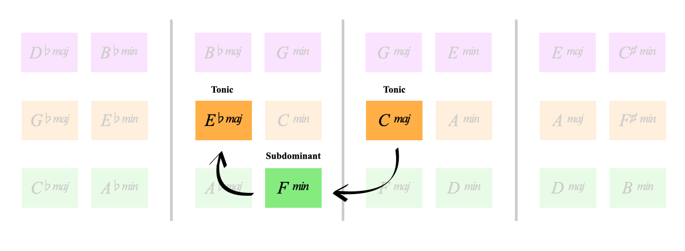

COOK BOOK:
Let's use the minor 4 to modulate around the hypercube
We've already heard C Fm to Eb in the second Harmonic Functions page
Harmonic Functions 2 We can see in the hypercube how our F minor is in the key of our final tonic Eb major
This goes 1 to the minor 4 in C major, but the F minor resolves into Gb major,
then we go to chord 4 in Gb major (Cb#11)
Then resolve to the tonic Gb major
C^7 Fm7 Gb69 Cb#11 Gbmajor
Can you visualise where that Cb (B) major would sit in the hypercube?
Again we have 1 to the minor 4 in C major, with the F minor resolving into A major,
then we go to chord 4 in A (D^7)
we then enjoy another 1 to 4 in A major
Then resolve to the tonic A major
C^7 Fm7 A^7 D^7 A^7 D^7 Amajor